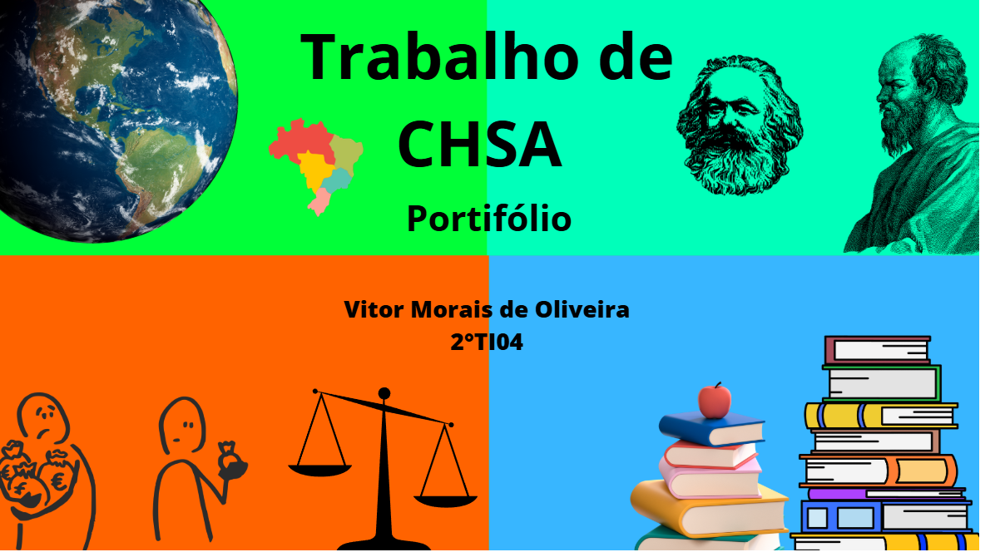
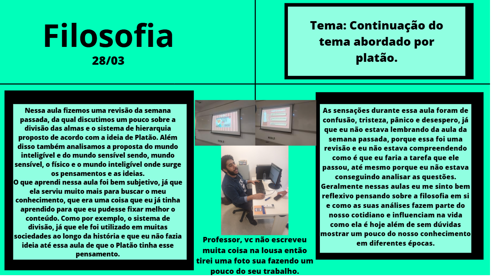
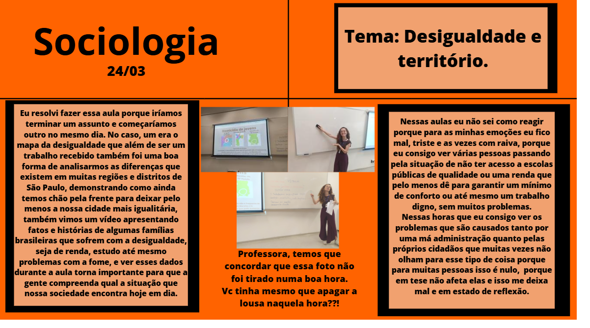
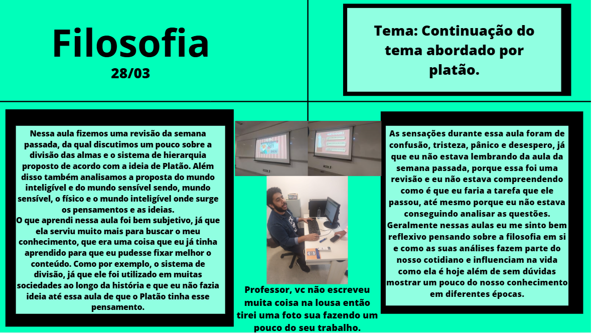
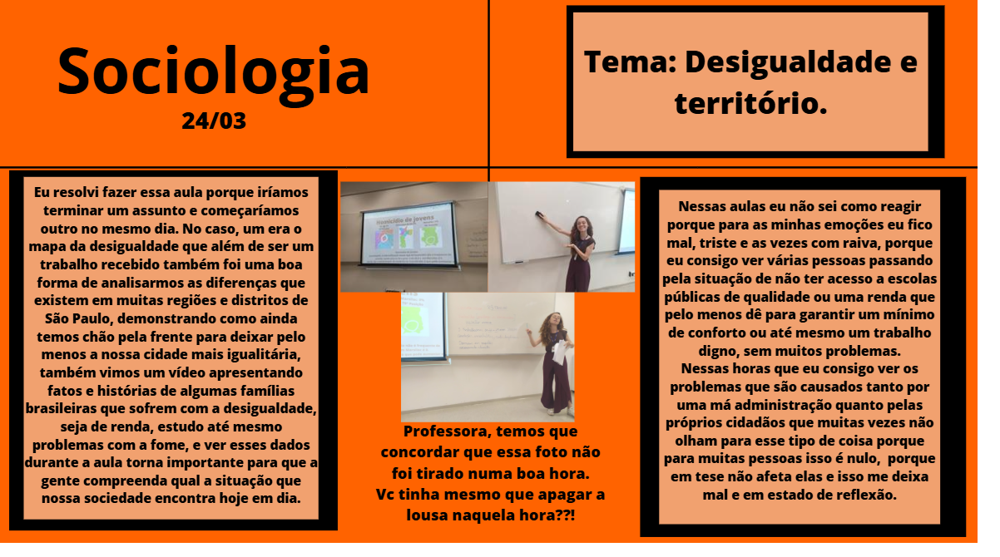

Ciências Humanas 2°
Lembro dessa integrada até hoje com muito carinho. Não foi apenas o conhecimento adquirido que marcou, mas também as aulas em si, que foram verdadeiramente especiais.
Durante o projeto, tínhamos a tarefa de fazer registros textuais e fotográficos de cada matéria de ciências humanas daquele bimestre. Modéstia à parte, eu amei essa experiência, pois ela não só fortaleceu minha memória como também me proporcionou algo muito valioso: registros dos professores que fizeram parte dessa fase tão importante. Entre eles, destaco Thaís, de geografia; Fabrício, de filosofia; Samira, de sociologia; e Ana Carolina, de história. Além de eternizar o meu grupo de amigos da época.
Foi uma forma de aprender de maneira criativa, ao mesmo tempo em que eternizava esses momentos e essas pessoas. Essa atividade, mais do que acadêmica, foi um registro de memórias que vou levar comigo para sempre.
Segue cinco fotos de referência para dar destaque para todos eles que não merecem palmas, mas Tocantins inteiro:
 


